What was tested
| Area | Check | Result | Evidence |
|---|---|---|---|
| Registration | Form loads; invalid email rejected; password under 8 characters rejected; mismatched confirmation rejected. | PASS | 01, 02, 03, 11 |
| Registration | Submitted unique test account; DB confirmed community role, approved flag, and unverified state. Duplicate email was rejected. | PASS | 04, 10 |
| Email verification | Used the local verification token; app showed the verified success page and the DB showed email_verified=1. | PASS | 06 |
| Login | Login form loads; wrong password rejected; correct password established a session and opened the community dashboard. | PASS | 05, 07, 08 |
| Portal enforcement | Changing the community login request to the government portal was rejected. | PASS | 12 |
| Session handling | Logout returned to sign-in; opening the protected community dashboard logged out redirected to sign-in. | PASS | 09, 13 |
| Related routes | Forgot-password and government login pages load. No password-reset submission was made. | PASS | 14 |
| Availability / syntax | /, signup, login, forgot-password, government login, and verification routes returned HTTP 200; PHP lint passed for index, login, signup. | PASS | Live checks recorded during test |


Scope and caveats
Email delivery was not validated. The app is served from /var/www/html, which has a separate existing mail configuration. A repository-local temporary SMTP override did not affect that runtime and was removed. The test used a reserved .invalid address and activated the account using its local DB token; no real mailbox was used. The password-reset form was viewed but not submitted.
The temporary account and its login-log rows were removed after evidence capture. Existing project edits were not changed. Screenshots are of the live local browser pages; each image can be opened full-size by clicking it.
Screenshot evidence
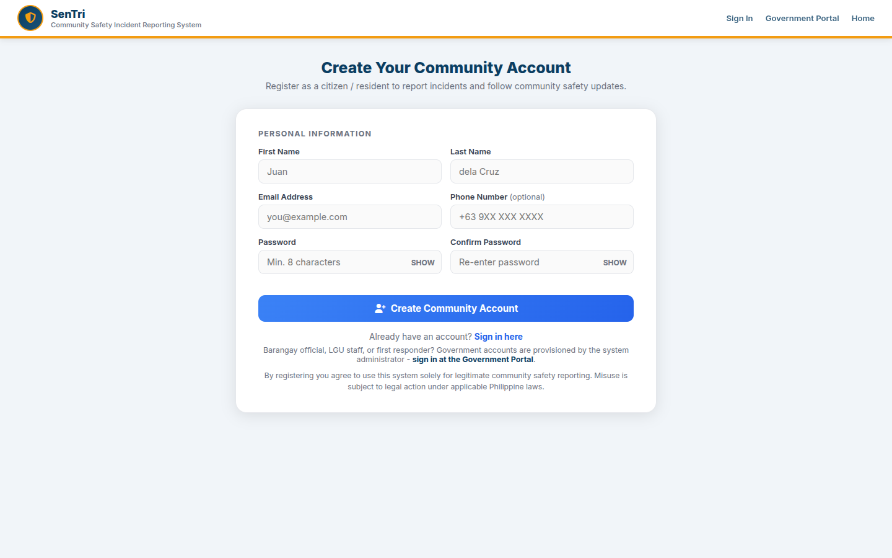
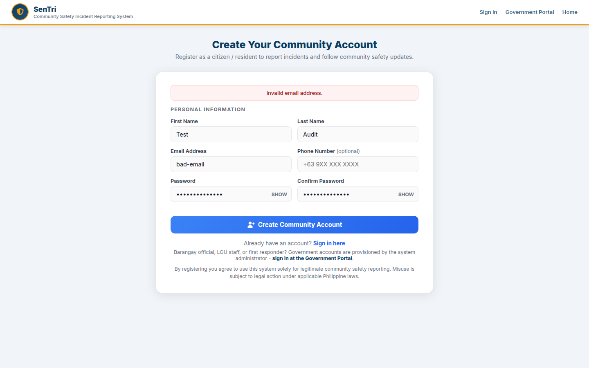
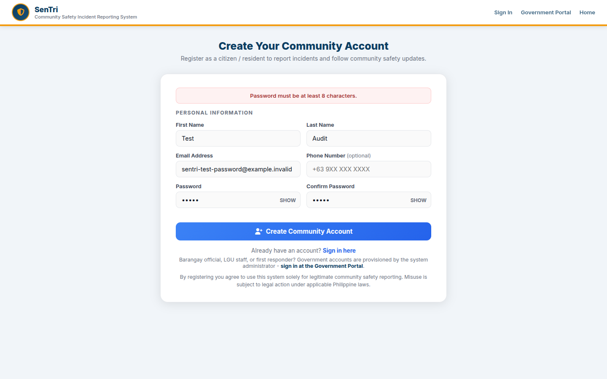

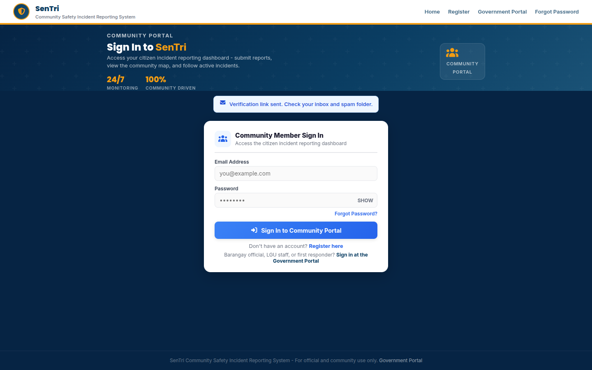
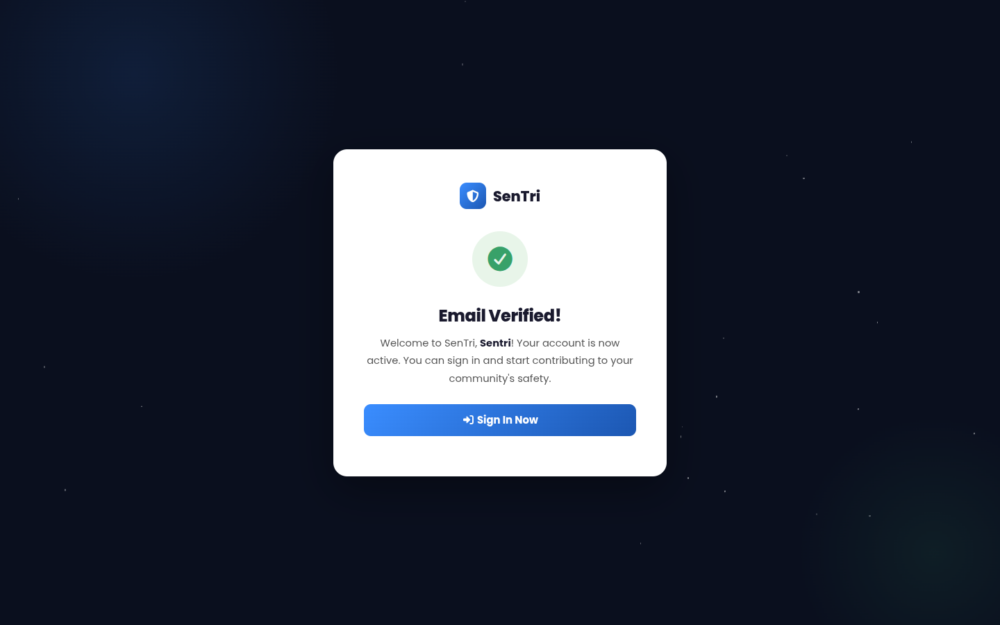
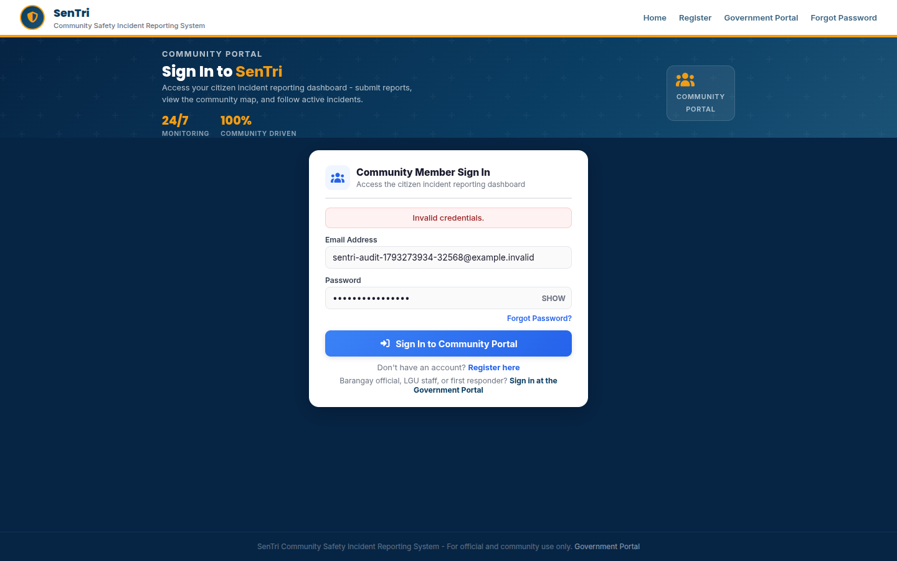
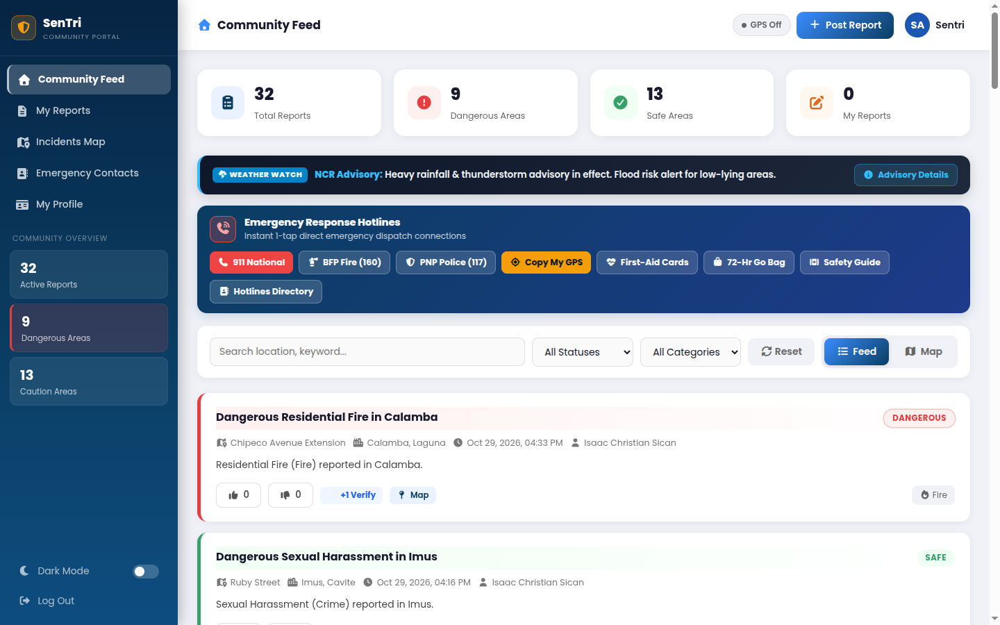

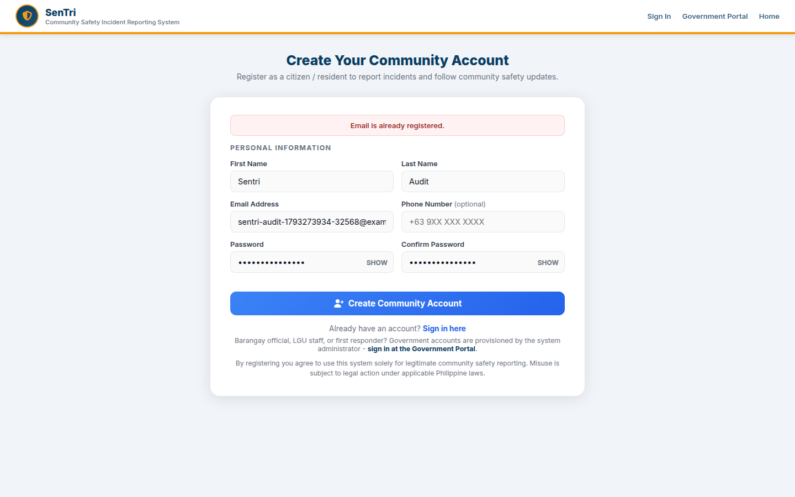
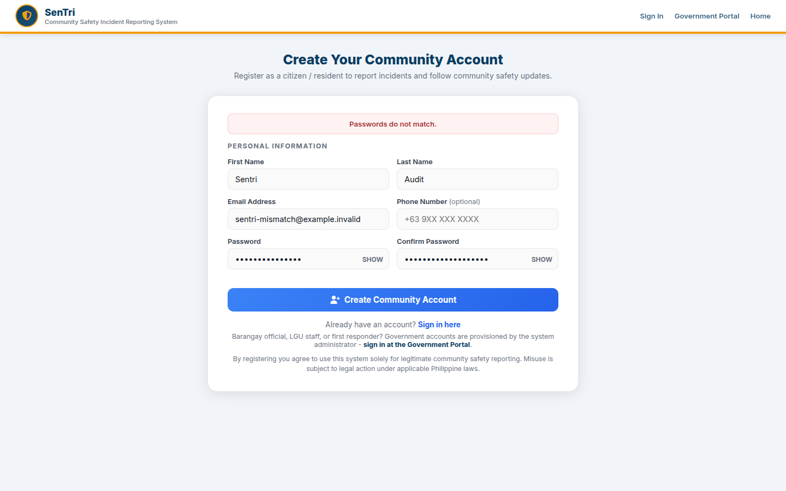
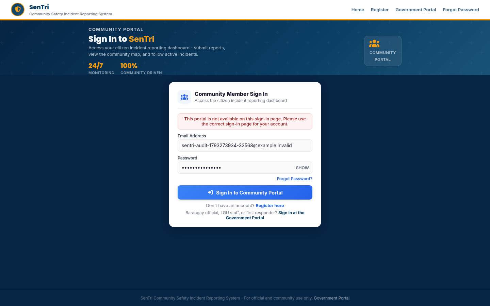
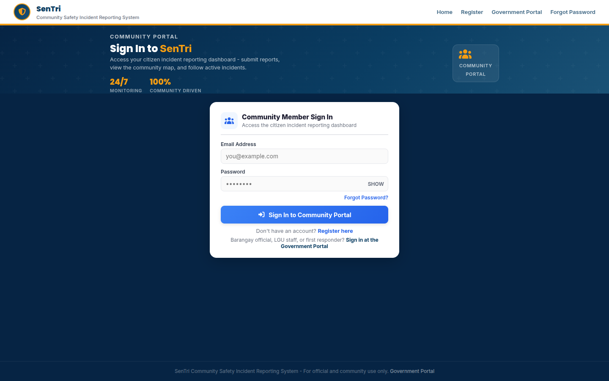
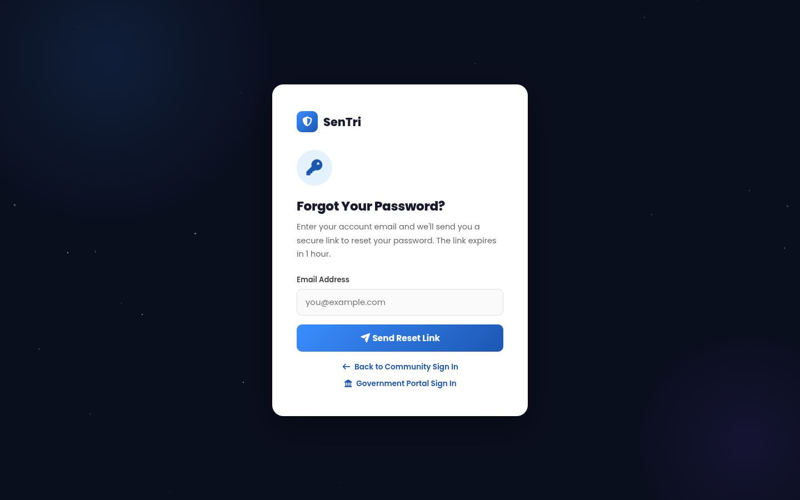